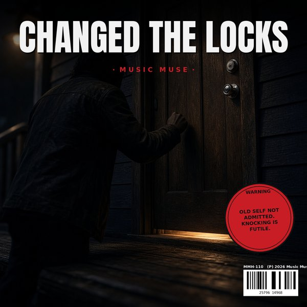

Changed the Locks
🗓 Nov 16, 2026
Track 01 · Late-2000s arena rock with electronics · 135 BPM · Tense male tenor with grit
Arena Rock2009
🔎 QA · T1 ✅ pass · T2 ⚠️ warn · ⭐ pick: Take 1
Take 1 ⭐ QA pick⬇ Download
Take 2⬇ Download
Lyrics & Suno recipe
📼 Inspired by Monster (Skillet, 2009)
Style
Late-2000s arena rock with electronics, gritty male tenor vocal, low tight close verses and shouted melodic choruses with stacked voices, no screaming, 135 BPM, E minor, driving and tense, pulsing string-like synth riff, heavy palm-muted guitars opening into big chords, four-on-the-floor kick with live drums, low piano doubling the riff, choir pad in a half-time bridge, thick loud dry mix, defiant, urgent, triumphant
| model | V6 |
|---|---|
| negativeTags | female lead vocals, screamed vocals, acoustic folk, banjo, soft ballad, trap hi-hats, jazz, country twang |
| instrumental | False |
| vocalGender | m |
| styleWeight | 0.65 |
| weirdnessConstraint | 0.5 |
| audioWeight | 0.65 |
| variety | 0 |
| duration | 215 |
| customMode | True |
| lead voice | Male tenor with grit. Verses are low, tight and close to the microphone. Choruses are shouted melody with stacked voices behind. No growling. The name in the last chorus is sung, not screamed. |
| taskId | c7d2c54926a7df2f57ee517e0988d0df |
| clip IDs | 2856b961-5146-40f3-a7a6-885b74e842ac, f9e4542b-aa99-463f-ad07-8055df9ab88b |
| durations | 214.8s, 214.3s |
| created | Nov 16, 2026 12:06 PM ET |
| QA take 1 | pass · 3:34 · 138 BPM measured (target 135) · -13.1 LUFS · vocals 77% of song · 67% of lyric lines recognised |
| QA take 2 | warn · 3:34 · 136 BPM measured (target 135) · -13.4 LUFS · vocals 77% of song · 24% of lyric lines recognised — lyric check weak: only 24% of lines recognised (unclear: Pre-Chorus, Final Chorus) |
Lyrics
[Intro: pulsing synth riff, palm-muted guitar, heartbeat kick] [Verse 1: low tense male voice, close] He comes around at midnight with my face on Same walk, same laugh, same jacket I had on He knows where I kept the spare, he knows the code He says, "Let me in. It's cold. You owe me. This is home." [Pre-Chorus: drums build] And I used to let him, every time I'd hand him the keys and I'd call it mine [Chorus: huge guitars, shouted melody] But somebody changed the locks He can knock, he can knock, he can knock The man I was is on the porch tonight And the door don't open from the outside I didn't do it, I'm not that strong Somebody changed the locks [Verse 2: voice steadier, guitars chugging] It was a carpenter. I'll tell you how it went. He didn't ask what I could pay, he didn't ask for rent He took the old door off its hinges with his hands There were scars on both of them. He said, "I understand." [Pre-Chorus: drums build] He hung a new one, heavy, solid, true Said, "I'll stand here. He goes through me to get to you." [Chorus: huge guitars, shouted melody] And somebody changed the locks He can knock, he can knock, he can knock The man I was is on the porch tonight And the door don't open from the outside I didn't do it, I'm not that strong Somebody changed the locks [Bridge: half-time, synths and stacked voices] Old things gone, a new thing begun I don't live there. I'm not that one. And the knocking's getting further away [Final Chorus: biggest, full band and voices] 'Cause Jesus changed the locks He can knock, he can knock, he can knock The man I was can stay out in the night 'Cause the one in my doorway is the Light I didn't do it, I'm not that strong Jesus changed the locks [Outro: knocking fades, one synth note, a latch clicks]Metadata (JSON)